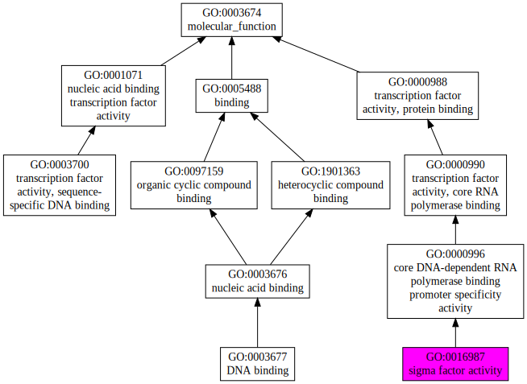
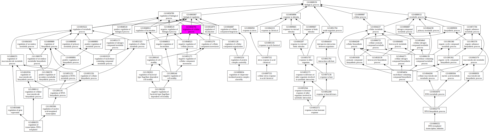
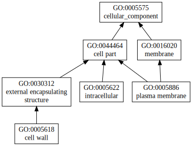

|

|
| GO term | CscoreGO | Name |
| GO:0016987 | 0.43 | sigma factor activity |
| GO:0003677 | 0.02 | DNA binding |
| GO:0003700 | 0.01 | transcription factor activity, sequence-specific DNA binding |
| Download full result of the above consensus prediction. |
| Click the graph to show a high resolution version. |
| (a) | CscoreGO is the confidence score of predicted GO terms. CscoreGO values range in between [0-1]; where a higher value indicates a better confidence in predicting the function using the template. |
| (b) | The graph shows the predicted terms within the Gene Ontology hierachy for Molecular Function. Confidently predicted terms are color coded by CscoreGO: |
| | [0.13,0.5) | [0.5,0.6) | [0.6,0.7) | [0.7,0.8) | [0.8,0.9) | [0.9,1.0] |
|
|
|

|
| GO term | CscoreGO | Name |
| GO:0050794 | 0.09 | regulation of cellular process |
| GO:0080090 | 0.07 | regulation of primary metabolic process |
| GO:0010556 | 0.07 | regulation of macromolecule biosynthetic process |
| GO:0006355 | 0.06 | regulation of transcription, DNA-templated |
| GO:0006352 | 0.06 | DNA-templated transcription, initiation |
| GO:1902201 | 0.01 | negative regulation of bacterial-type flagellum-dependent cell motility |
| GO:1900378 | 0.01 | positive regulation of secondary metabolite biosynthetic process |
| GO:0097533 | 0.01 | cellular stress response to acid chemical |
| GO:0090034 | 0.01 | regulation of chaperone-mediated protein complex assembly |
| GO:0052572 | 0.01 | response to host immune response |
| Download full result of the above consensus prediction. |
| Click the graph to show a high resolution version. |
| (a) | CscoreGO is the confidence score of predicted GO terms. CscoreGO values range in between [0-1]; where a higher value indicates a better confidence in predicting the function using the template. |
| (b) | The graph shows the predicted terms within the Gene Ontology hierachy for Biological Process. Confidently predicted terms are color coded by CscoreGO: |
| | [0.08,0.5) | [0.5,0.6) | [0.6,0.7) | [0.7,0.8) | [0.8,0.9) | [0.9,1.0] |
|
|
|

|
| Download full result of the above consensus prediction. |
| Click the graph to show a high resolution version. |
| (a) | CscoreGO is the confidence score of predicted GO terms. CscoreGO values range in between [0-1]; where a higher value indicates a better confidence in predicting the function using the template. |
| (b) | The graph shows the predicted terms within the Gene Ontology hierachy for Cellular Component. Confidently predicted terms are color coded by CscoreGO: |
| | [0.14,0.5) | [0.5,0.6) | [0.6,0.7) | [0.7,0.8) | [0.8,0.9) | [0.9,1.0] |
|
|
|